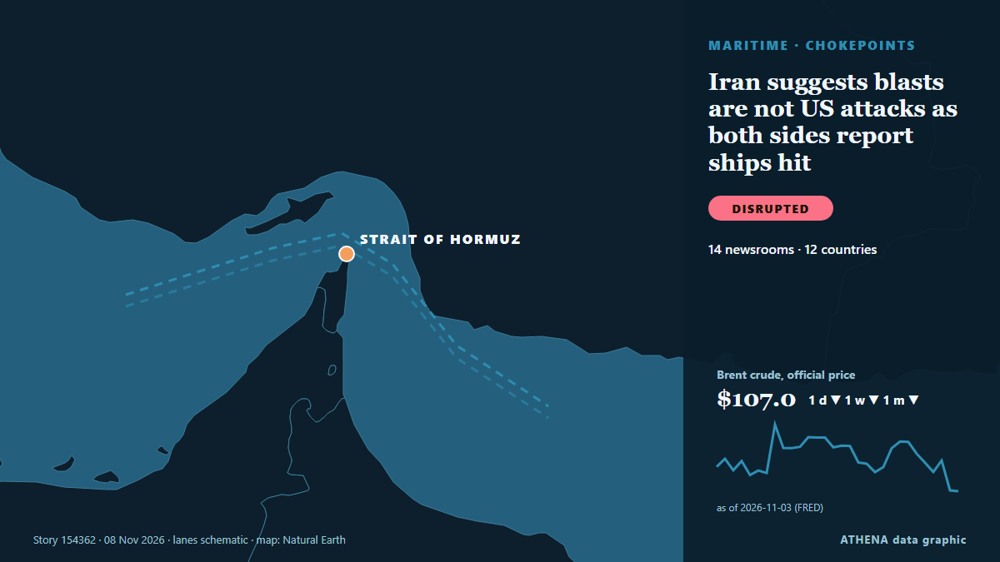

Γεωπολιτική, Πολιτική & Ασφάλεια
ΧορηγούμενοΠαρουσιάζεται από  Cybernetics and Artificial Intelligence Lab Welcome to the Cybernetics and Artificial Intelligence Laboratory, established at the Department of Business Administration of the National and Kapodistrian University of Athens. The lab is headed by Professor Dimitrios Thomakos. The lab aims to do research that can be published in top venues. Our research uses tools and methods of Artificial Intelligence, and lies in the following areas: - Forecasting - Decision making - Cyber security - Finance We are always looking forward to collaborating with exceptional students!
Cybernetics and Artificial Intelligence Lab Welcome to the Cybernetics and Artificial Intelligence Laboratory, established at the Department of Business Administration of the National and Kapodistrian University of Athens. The lab is headed by Professor Dimitrios Thomakos. The lab aims to do research that can be published in top venues. Our research uses tools and methods of Artificial Intelligence, and lies in the following areas: - Forecasting - Decision making - Cyber security - Finance We are always looking forward to collaborating with exceptional students!
Οι τίτλοι των ειδήσεων παρουσιάζονται στα αγγλικά, όπως δημοσιεύτηκαν.

Πόλεμοι & συγκρούσειςIran suggests blasts are not US attacks as both sides report ships hit
CAIRO, Nov 8 - Iranian media suggested explosions in southern Iran on Saturday evening were related to Iranian military activities rather than US strikes while both sides reported that shipping had… από The Straits Times
| 26 Οκτ | 318 |
|---|---|
| 27 Οκτ | 278 |
| 28 Οκτ | 236 |
| 29 Οκτ | 245 |
| 30 Οκτ | 287 |
| 31 Οκτ | 154 |
| 1 Νοε | 212 |
| 2 Νοε | 316 |
| 3 Νοε | 352 |
| 4 Νοε | 396 |
| 5 Νοε | 329 |
| 6 Νοε | 217 |
| 7 Νοε | 200 |
| 8 Νοε | 115 |
Poland in shock after 6 killed in Krakow far-right shooting
5 of 16 injured individuals foreign nationals from Austria, Germany, Portugal, Russia, UK. από Anadolu Agency (English)
Israeli President Herzog tasks Gadi Eisenkot with forming new government
The president's decision comes after 67 lawmakers endorsed Eisenkot in a round of consultations held with party representatives after the October 27 election, compared with just 46 who endorsed… από Haaretz (English)
US strikes Iran’s Qeshm island – Report
The US has not publicly announced the attacks, so as not to signal any intention of resuming major combat operations, the Wall Street Journal reported. από CNA (Channel NewsAsia)
With Stephen Miller at the helm, Trump charts a course for confrontation
The architect of the Trump administration’s brutal crackdowns on immigration and dissent was already known as “the prime minister.” Now he’ll work as the chief of staff. από Wired
US launches task force to disrupt land transit routes into Iran
US Central Command chief Brad Cooper said the task force would further limit Iran's ability to fund terrorism, rebuild weapons factories and replenish its military. από Free Malaysia Today
Riyadh financial district targeted, Aramco tower damaged
RIYADH: Multiple witnesses told AFP on Sunday that Riyadh’s financial district had been targeted and the area’s Aramco tower damaged, after the Saudi-led coalition fighting Yemen’s Houthis said it… από New Straits Times
Pete Hegseth faces bipartisan impeachment push after Republican losses in US midterm elections
A September address to service members at Quantico detailed Hegseth’s vision for his remaining two years in office, including expanding advanced weaponry and establishing a new overseas facility. από The Independent
Just In: South Africa’s ANC slumps to 30.76 per cent of votes in worst-ever election result
Gauteng and KwaZulu-Natal account for 13 of the 20 murders involving political figures and supporters recorded during the election period, as police investigate 139 election-related criminal cases… από IOL
Israel’s president picks Netanyahu rival Gadi Eisenkot to form government
The deadlocked election had left neither Prime Minister Benjamin Netanyahu nor his strongest rival, Gadi Eisenkot, with a clear path to power. από The Independent
Trump offers UFC boss Dana White job of White House press secretary
President Trump said he offered the job of White House press secretary to Dana White, president and CEO of the Ultimate Fighting Championship (UFC). από The Hill
Russian strikes cut power to hundreds of thousands in Ukraine
Ukraine is bracing for a new harsh winter of war as Russia ramps up daily aerial barrages, raining down drones and missiles on the power network. από Free Malaysia Today
Italy blames pro-Russian hackers for leaking Tajani’s personal data
Italy’s prime minister, Giorgia Meloni, has blamed pro-Russian hackers for posting the foreign minister’s personal data on the dark web. από The Next Web
Europe will be represented at US-mediated Ukraine talks in Abu Dhabi: France
France has announced that Europe will be represented at US-mediated talks in Abu Dhabi with Russia and Ukraine. από Arab News
Kremlin confirms trilateral talks on Ukraine set for Nov 10-11 in Abu Dhabi
The United States will bring together delegations from Ukraine and Russia in Abu Dhabi on November 10-11 to discuss ending Russia's conflict with Ukraine, post-conflict security agreements and… από CGTN (World)
Democratic leader Hakeem Jeffries announces bid for US House speaker
'I write to humbly request your support in connection with my candidacy to serve as the next Speaker of the House of Representatives,' says Jeffries in letter. από Anadolu Agency (English)
Houthis say 33 killed in Saudi strikes on Yemen's Sanaa province
Yemen’s Houthis say at least 25 people have been killed and 30 injured in air strikes. από Al Jazeera English
Turkey's parliament ratifies Mecca pact
Opposition Republican People’s Party (CHP) leader Kemal Kılıçdaroğlu has stated his party will vote in favor of a defense agreement between Türkiye, Pakistan and Saudi Arabia when it comes before… από Hürriyet Daily News
US Offers Up to $20 Million Reward for Information on Iran’s Nuclear Program
WASHINGTON, Nov 7: The United States has announced a reward of up to $20 million, along with possible relocation, for information about Iran’s nuclear program, including its facili... από Arab Times
After JD Vance, now Trump Jr blames Iran war for US midterms defeat
Says war in Iran had weighed on Republican candidates, even as voters backed his handling of it. από Express Tribune
Putin orders seizure of more Japan Tobacco assets in Russia
Russian President Vladimir Putin on Friday placed more Russian assets of Japan Tobacco Inc. under control, a day after signing a dec. από Mainichi (English)
Son of Iran’s ousted shah takes controversial prize
Reza Pahlavi received a 'Freedom Prize' in Frankfurt awarded to the Iranian people in a ceremony that critics said was illegitimate. από Free Malaysia Today
Iran says forces 'stronger' than at beginning of war
Iran claims its military capabilities have enhanced amid ongoing tensions with the United States and Middle East conflict. από Arab News
Colombian Firms Back Brazil Before Lula Win
Our experts unpack what Lula’s victory means for Brazil’s ties with Washington and how it could reshape a region trending right. από Atlantic Council
27 killed in Saudi strikes on Yemen’s Sanaa province: Houthis
Yemen: Saudi air strikes reported in Sanaa, clashes in Lahij governorate Houthi affiliated media is reporting air strikes targeting the Hamdan district in Sanaa. από Middle East Eye
Two explosions reported on Iran’s Qeshm Island
The eastern part of the island was targeted, the news agency reported. από TASS (English)
Russia says it hit targets in and around Kyiv in massive overnight strike
Russia said its forces carried out a massive overnight strike on what it described as targets in Ukraine’s military-industrial sector and energy and transport infrastructure in Kyiv and the… από Cyprus Mail
Qatar says its mediation efforts between US and Iran continue to prevent escalation
Nov 7 (Reuters) - Qatar's Prime Minister said the country's mediation efforts between the US and Iran were continuing to prevent the situation in the region from spiraling out of control, Al Jazeera… από Al-Monitor
Trump signs order to preserve Oval Office as national monument
The order comes after Trump made a series of big changes to the decor of the Oval Office and tore down the White House East Wing. από BBC News
Stephen Miller replaces Susie Wiles as Trump's White House chief of staff after GOP's midterm defeat
Just days after the Republican Party's resounding defeat in the midterms, U.S. από CBC News (alternative feed)
Death toll from Russian attack on Komyshuvakha rises to 55
Rescue workers have recovered the remains of nine more victims from under the rubble as search operations continue amid the threat of further Russian strikes. από Ukrainska Pravda (English)
Kazakhstan president proposes admitting Russia to Organization of Turkic States
Russia’s Digital Development Ministry has proposed cutting off cellular service to smartphones brought in from abroad starting in April 2027 if their owners fail to register them by IMEI number… από Meduza (English)
Israeli strikes in Gaza kill 8, including a child
Five people were killed in Khan Yunis and three in Gaza City, according to Gaza's civil defence service. από Free Malaysia Today
Trump says ‘big, beautiful agreement’ on Ukraine ‘might involve all of Europe’
British troops are due to take part in a major Coalition of the Willing military exercise to prepare for potential peace. από Evening Standard (London)